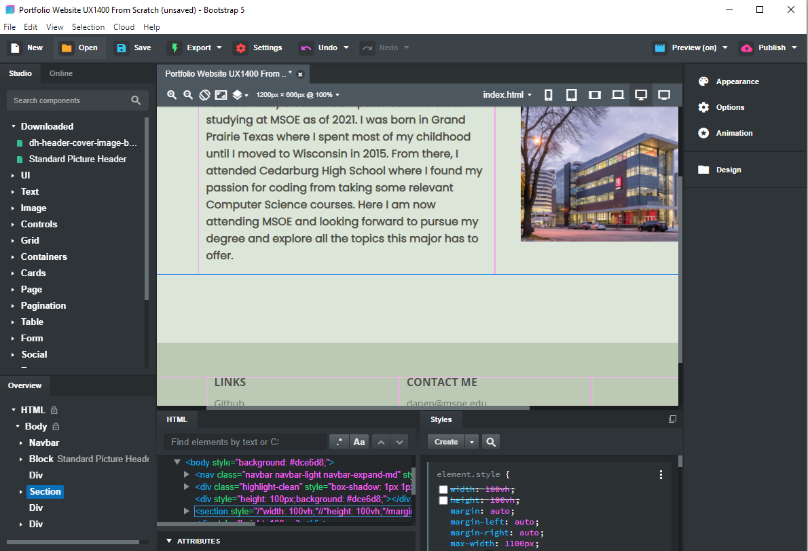

UX Reflection
Working on this portfolio has taught me a lot about designing my own website. I was able to learn about things such as the C.R.A.P principles which I kept in mind while making decisions on the things I wanted to have on this website as well as designing my portfolio. I also learned the importance of brainstorming and wireframing as it helped me have a better starting point as well as explore what layout I liked/disliked for the website. Lastly, I got to improve my peer reviewing skills as I made sure to give meaningful feedback that the reviewee may find insightful. This also benefitted me as well since I got to see the unique and interesting ideas that others came up with and maybe include it somehow in my own things.
Over the course of this quarter, my idea of UX has expanded as I was able to explore some processes and techniques UX majors can go through in improving the UX aspect of a product. This included going through a design sprint with a team to think big and come up with a solution based on responses on interviewees on what problems they had with remote learning last year. By synthesizing our own interview questions, we were able to get responses that were insightful on what we wanted our solution to be but not bias so that we don't force the interviewee to answer a certain way.
I would say that this foundational UX course proved insightful to me as I could find some applications I could apply this to my major which is Computer Science. Some of the more major takeaways I got from this course included a solid resume to show to employers as well as this portfolio website which could help potential employers to know more about me.
Design Rationale
Based on my previous wireframing and brainstorming, I was able to create this website which includes some of my initial ideas that I wanted. This included the way I separated different content such as having the reflection on its own page and also the project pages. I also decided to keep the home page format sort of the same with having a center portrait and separating other content onto other pages. I decided to do this since I want people to not get turned off if there is so much text when they first load up my website. Lastly, I used bootstrap studio to create my website since it seems to be included with the GitHub student pack so I wanted to learn how to use it. However, this caused me to face some limitations on what I wanted to do such having trouble with alignment and having to learn how to use it.
Potential visitors I am keeping into account include employers for companies that I may apply for as well as just curious people who want to learn more about me. So for the way I designed my website, I mainly kept employers in mind in figuring out what I could do to make employers find things they may be interested in as simple as possible. This included making sure the navbar contained the projects page and have the contacts at the bottom of each page so that employers can have a way of contacting me and that it won't be too hard to find.